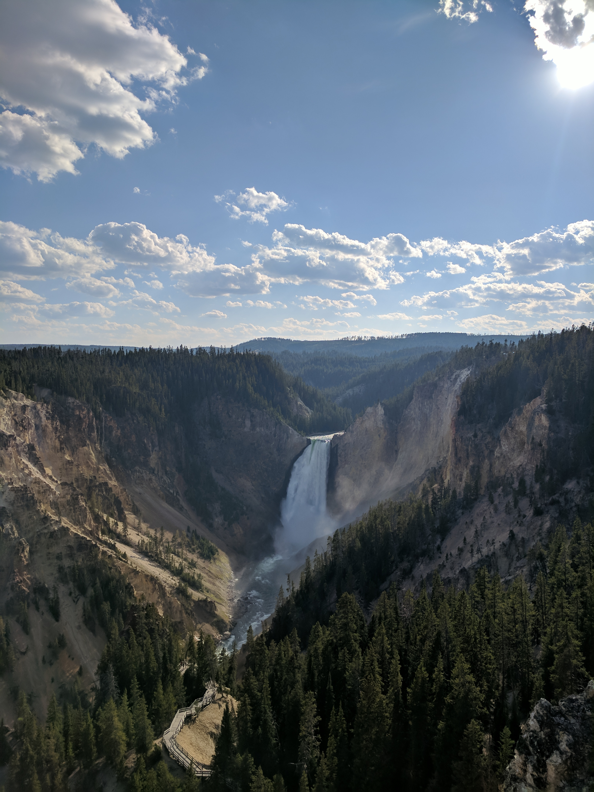
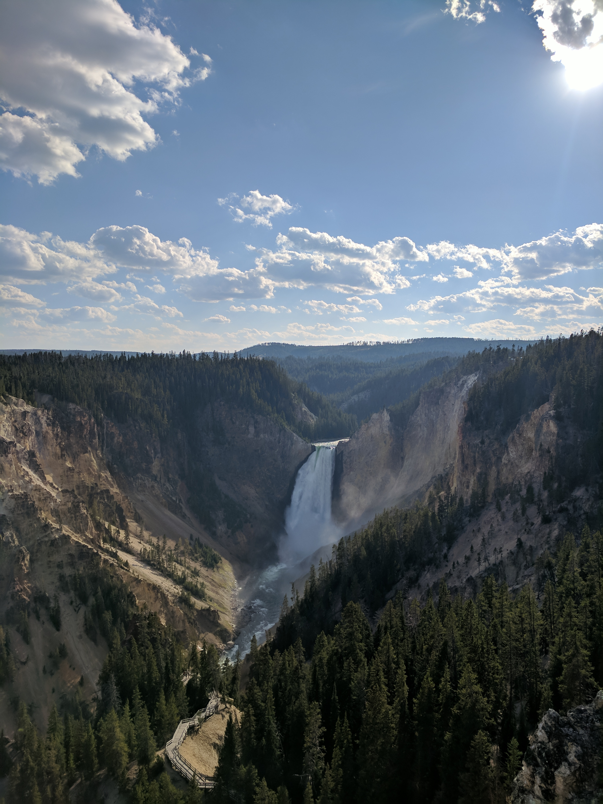

Rison's Website
Basic Info
My name is Rison Lain. I'm 21 years old and I live in Cheyenne.


Hobby Photos
 


Background
I don't have background in web development or technology. I want to be a developer because it is a skill that would help me in the modern world and into the future.
Hobbies
My favorite hobby is hiking with friends or family. During my tenure with the Wyoming Conservation Corps I was able to hike and camp across Wyoming and northern Colorado and I came away from that experience with a deep appreciation for and understanding of nature. A newer hobby of mine is baking, I really enjoy the experimentation and precision of tinkering with recipes until they come out just right and I've been working on a method to document my recipes in baker's percentages so I can (hopefully) expect more consistent results in the future. In addition to outdoor activities and baking, I am an avid reader, especially so in the winter months. I most enjoy classics, but I do work a contemporary novel in every now and then. My last completed book is Anna Karenina and come next winter I plan on starting War and Peace.
A Proud Moment
My proudest achievement is the trail I mainained and upgraded in rotary club park outside of Casper Wyoming. The trail offered numerous technical challenges and the end result was better than I ever would have expected at the beggining of the project.
Looking Forward
Immediately after the Array School I am hoping to enroll in the Array apprenticeship program to continue learning and developing. A long term goal of mine is to have a job that allows me to work from anywhere so I can travel and keep my own hours.